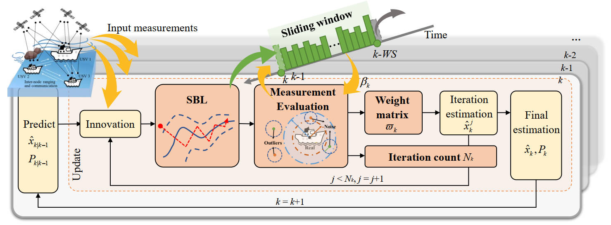
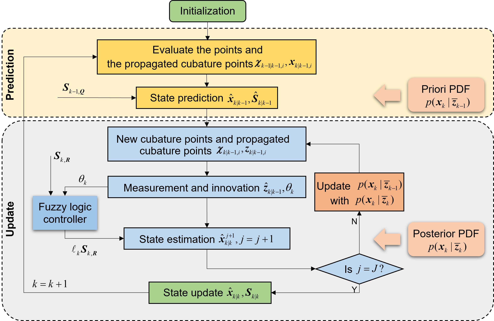
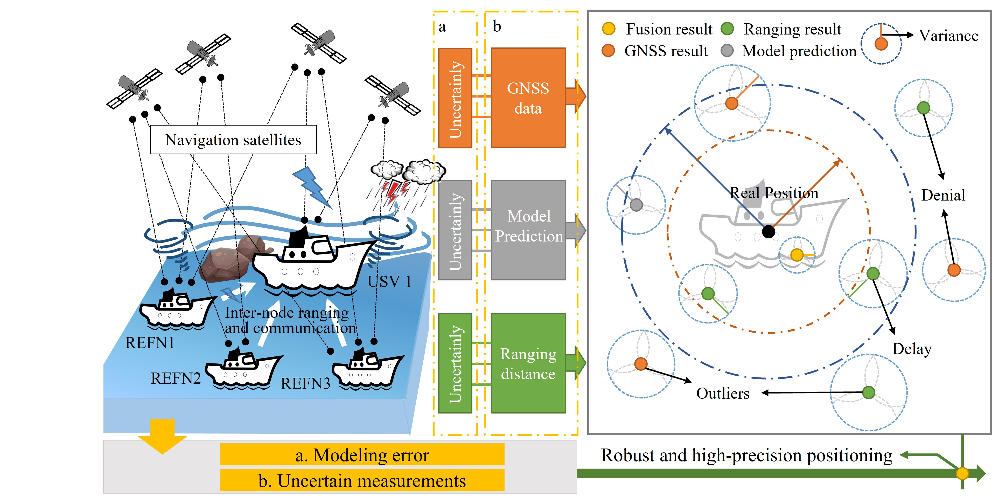
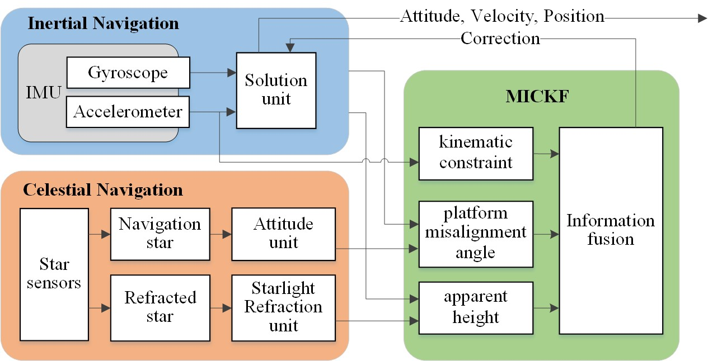
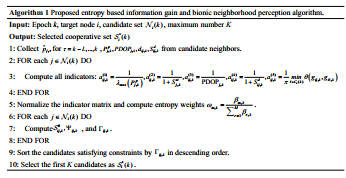
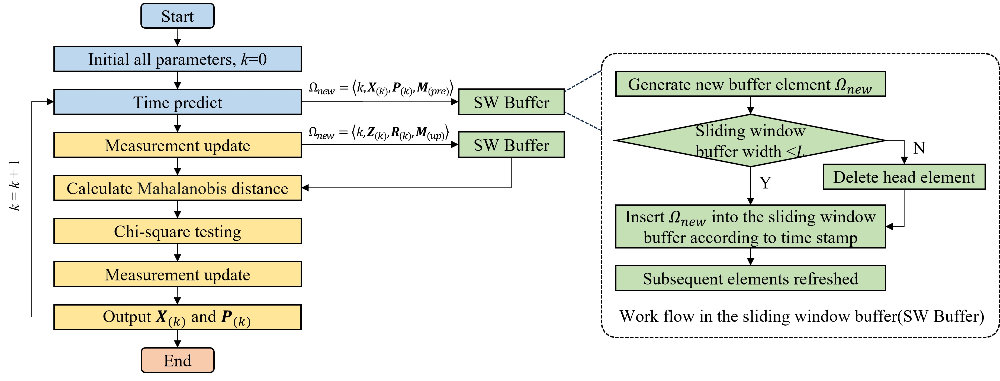

Chunfeng Shi
I received my Ph.D. degree in Instrument Science and Technology from Southeast University in June 2026, supervised by Prof. Xiyuan Chen. Prior to this, I worked as a Network Security Engineer at ZTE Corporation from 2020 to 2022. I received my Bachelor's and Master's degrees from Southeast University.
My research interests include perception, localization, and decision-making for unmanned surface and underwater vehicles (USVs/UUVs), cooperative navigation for unmanned swarms, and multi-sensor information fusion.
Email: chunfeng.shi@hhu.edu.cn
Google Scholar: Chunfeng Shi
Address: College of Artificial Intelligence and Automation, Hohai University, Changzhou, China
Publications






Show More ...
Education and Experience
- 2022 - 2026: Ph.D. in Instrument Science and Technology, Southeast University.
- 2020 - 2022: Network Security Engineer, ZTE Corporation.
- 2017 - 2020: M.S. in Instrument Science and Technology, Southeast University.
- 2015 - 2017: Minor in Business Administration, Southeast University.
- 2013 - 2017: B.S. in Measurement and Control Technology and Instruments, Southeast University.
Projects & Patents
- Project (PI): Research on USV Formation Cooperative Navigation and Positioning Technology under Complex Sea States (Jiangsu Postgraduate Research and Innovation Plan).
- Patent: Xiyuan Chen, Chunfeng Shi, Junwei Wang. A fuzzy adaptive cooperative navigation information fusion method (Granted, CN116147619B)
- Patent: Xiyuan Chen, Chunfeng Shi, Zhen Ma, Xin Shao. SINS data processing device and its multi-source error modeling method under overload environments (Granted, CN109141418B)
Show More ...
- Patent: Xiyuan Chen, Chunfeng Shi, Di Liu. A SINS/CNS integrated navigation method for correcting accelerometer errors (Granted, CN111707259B)
- Patent: Xiyuan Chen, Chunfeng Shi. An inertial/celestial integrated navigation method for improving position error estimation accuracy (Granted, CN111060097B)
- Patent: Hong Zeng, Chunfeng Shi, Junyi Yang, et al. A dynamic personalized song recommendation system and method based on EEG headset (Granted, CN105045898B)
Honors
- 2026: Outstanding Graduate, Southeast University.
- 2025 & 2018: National Scholarship for Graduate Students (Ministry of Education, PRC).
- 2024: First Prize in East China Division, 19th China Postgraduate Electronic Design Competition.
- 2023: Special Commendation Gold Medal, International Exhibition of Inventions Geneva.
- 2022: Top 10 Scientific and Technological Advances in Electronic Information of Jiangsu Province.
Show More ...
- 2022: Second Prize, China Sensor Innovation and Entrepreneurship Competition.
- 2016: Honorable Mention, Interdisciplinary Contest in Modeling (ICM).
- 2016: First Prize, "Beidou Cup" National Youth Sci & Tech Innovation Competition.
- 2015: First Prize, 5th China Educational Robot Competition.
- 2015: First Prize, 3rd National Virtual Instrument Competition.
- 2015: Second Prize, China Robot Competition and RoboCup Open.
Academic Activities
- Reviewer: IEEE Transactions on Industrial Informatics (TII), IEEE Transactions on Instrumentation and Measurement (TIM), Defence Technology, International Conference on Intelligent Computing (ICIC), etc.
- Co-author: Textbooks "Introduction to Information and Communication Networks" and "Fundamentals of Metrology".